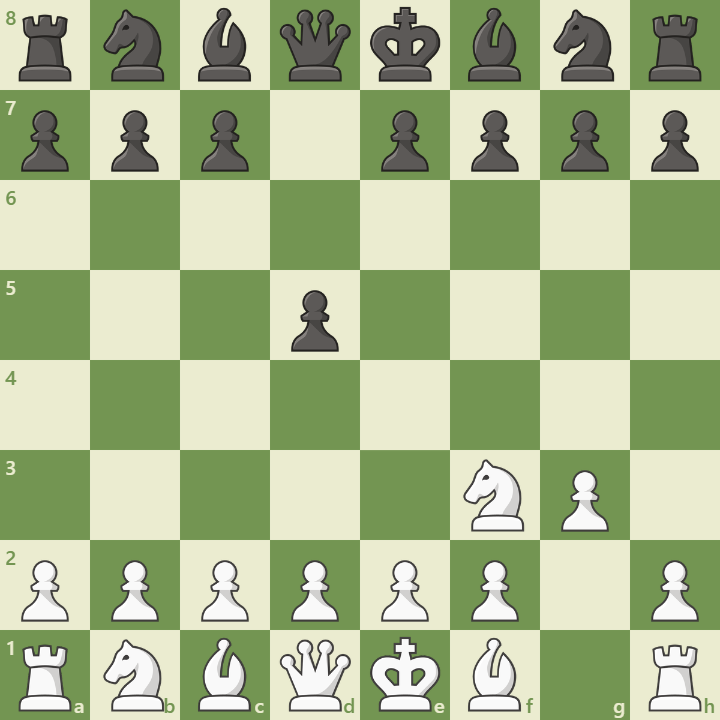

Overview
The King’s Indian Attack (KIA) is a flexible system for White that can be played against many Black setups. It begins with:
1. Nf3 d5 2. g3
White aims for a fianchetto setup, followed by e4, d3, Nbd2, and O-O. It’s known for its deep strategic ideas and powerful kingside attacks.
Opening Diagram
This position arises after 1.Nf3 d5 2.g3. White prepares a kingside fianchetto and flexible central structure.
Main Variations
- Standard KIA: Nf3, g3, Bg2, d3, e4 – slow buildup.
- French Setup: Played against 1...e6 – transposes into KIA vs French.
- KIA vs Sicilian: Played against 1...c5 – flexible and aggressive.
Strategic Themes
- Kingside fianchetto and central control
- Slow buildup with e4 and d3
- Powerful pawn storms and attacking chances
- Ideal for players who prefer system-based play